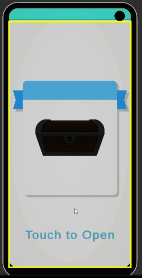

Project Detail
UI Project
게임 플레이 이전 구간의 사용자 경험을 구조적으로 설계한 UI 시스템 프로젝트입니다. 단순히 화면을 배치하는 수준이 아니라, 타이틀 화면부터 다운로드 확인, 로딩, 메인 메뉴, 게임 진입까지의 흐름을 각각의 역할 단위로 나누어 연결하는 데 집중했습니다.
Project Detail
게임 플레이 이전 구간의 사용자 경험을 구조적으로 설계한 UI 시스템 프로젝트입니다. 단순히 화면을 배치하는 수준이 아니라, 타이틀 화면부터 다운로드 확인, 로딩, 메인 메뉴, 게임 진입까지의 흐름을 각각의 역할 단위로 나누어 연결하는 데 집중했습니다.

Overview
게임 시작 전 구간을 하나의 UX 흐름으로 연결하고 각 단계를 분리해 관리할 수 있도록 설계했습니다.
UI 조작과 인게임 조작을 분리해 입력 충돌을 줄이고 상황에 맞는 전환이 가능하도록 구성했습니다.
SceneManager, UIManager, PopUpManager처럼 역할 단위로 책임을 나누는 구조를 목표로 했습니다.
팝업과 흐름을 공통 구조로 묶어 이후 기능 추가 시 기존 코드 수정 범위를 줄이는 방향으로 접근했습니다.
이 프로젝트는 게임 내부 전투 시스템보다 먼저 사용자가 마주하는 흐름을 어떻게 설계할 것인가에 초점을 둔 프로젝트입니다. 타이틀 화면에서 시작해, 필요한 확인 단계를 거치고, 로딩을 보여주고, 메인 메뉴를 통해 게임으로 진입하는 과정을 각각 독립된 역할로 분리하면 유지보수가 쉬워지고 이후 기능 추가도 더 안정적으로 진행할 수 있습니다.
또한 UI 조작과 실제 플레이 입력을 같은 상태로 다루면 충돌이 생기기 쉬우므로, 입력 상태를 분리하고 상황에 따라 전환할 수 있는 구조를 잡는 것이 핵심 포인트였습니다.
Structure
이 프로젝트는 README 기준으로 타이틀 → 다운로드 확인 → 로딩 → 메인 메뉴 → 게임 진입 흐름을 중심으로 설계되어 있습니다. 중요한 점은 각 화면이 단순 전환이 아니라, 사용자에게 현재 어떤 단계인지 명확히 전달하는 역할을 가진다는 점입니다.
UI 흐름을 한 클래스에 몰아넣는 대신, 씬 전환, UI 표시, 팝업 제어를 각각 다른 책임으로 나누는 구조를 지향했습니다. 이렇게 역할을 분리하면 특정 기능을 수정할 때 영향 범위를 줄일 수 있고, 새 팝업이나 새 메뉴를 추가할 때도 기존 구조를 유지한 채 확장하기 쉬워집니다.
메뉴를 조작하는 상황과 실제 게임을 조작하는 상황은 요구되는 입력이 다릅니다. 이 프로젝트는 그 차이를 구조적으로 분리해, 메뉴 탐색 중에는 UI 입력만, 게임 진입 이후에는 인게임 입력만 활성화하는 방식으로 사용자 경험을 더 명확하게 만드는 방향을 보여줍니다.
Core Code
Flow Design
타이틀, 확인, 로딩, 메뉴, 진입 과정을 하나의 흐름으로 연결하되 각 단계의 책임을 나누는 방식입니다.
public enum BootFlowStep
{
Title,
DownloadCheck,
Loading,
MainMenu,
EnterGame
}
public class BootFlowController : MonoBehaviour
{
private BootFlowStep _currentStep;
public void MoveNext()
{
if (_currentStep == BootFlowStep.Title)
{
_currentStep = BootFlowStep.DownloadCheck;
return;
}
if (_currentStep == BootFlowStep.DownloadCheck)
{
_currentStep = BootFlowStep.Loading;
return;
}
if (_currentStep == BootFlowStep.Loading)
{
_currentStep = BootFlowStep.MainMenu;
return;
}
if (_currentStep == BootFlowStep.MainMenu)
{
_currentStep = BootFlowStep.EnterGame;
}
}
}Input Separation
상황에 따라 입력 상태를 전환해 메뉴 조작과 게임 조작이 서로 충돌하지 않도록 하는 구조입니다.
public enum InputMode
{
UI,
InGame
}
public class InputStateController : MonoBehaviour
{
private InputMode _currentMode;
public void ChangeMode(InputMode mode)
{
_currentMode = mode;
if (_currentMode == InputMode.UI)
{
EnableUIInput();
DisableInGameInput();
return;
}
EnableInGameInput();
DisableUIInput();
}
private void EnableUIInput() { }
private void DisableUIInput() { }
private void EnableInGameInput() { }
private void DisableInGameInput() { }
}Popup System
개별 팝업이 제각각 동작하는 대신, 공통 베이스를 두고 중앙 매니저가 열고 닫는 방식으로 관리하는 구조입니다.
public abstract class BasePopup : MonoBehaviour
{
public virtual void Open()
{
gameObject.SetActive(true);
}
public virtual void Close()
{
gameObject.SetActive(false);
}
}
public class PopupManager : MonoBehaviour
{
public void Show(BasePopup popup)
{
if (popup == null)
{
return;
}
popup.Open();
}
public void Hide(BasePopup popup)
{
if (popup == null)
{
return;
}
popup.Close();
}
}Loading UX
단순히 씬만 바꾸는 것이 아니라, 사용자가 현재 준비 중인 상태를 인지할 수 있게 만드는 로딩 흐름 설계입니다.
using UnityEngine;
using UnityEngine.UI;
public class LoadingPresenter : MonoBehaviour
{
[SerializeField] private Slider progressBar;
[SerializeField] private GameObject continuePanel;
public void UpdateProgress(float value)
{
if (progressBar != null)
{
progressBar.value = value;
}
}
public void ShowContinue()
{
if (continuePanel != null)
{
continuePanel.SetActive(true);
}
}
}이 프로젝트의 강점은 화려한 연출보다, 게임 시작 전 UI를 “사용자 경험 흐름”과 “시스템 구조” 관점에서 나눠서 생각했다는 점입니다. 단순한 버튼 배치가 아니라, 입력 상태 분리, 팝업 공통화, 로딩 단계 전달, 씬/화면 책임 분리를 함께 묶어 설계한 점을 강조하면 좋습니다.